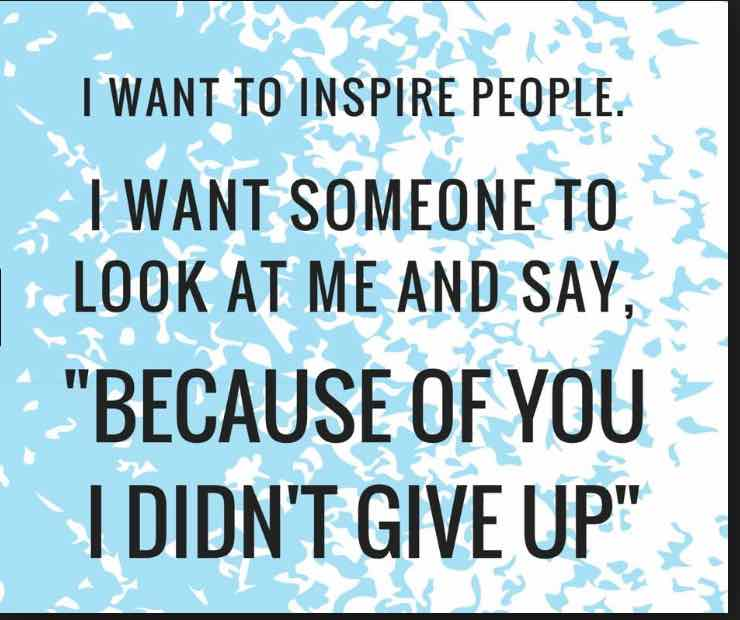
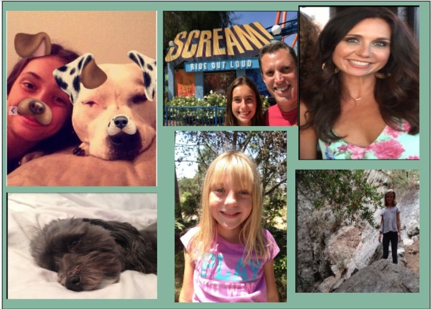
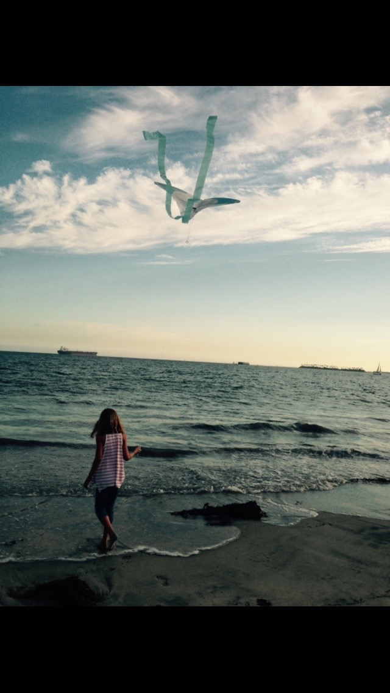
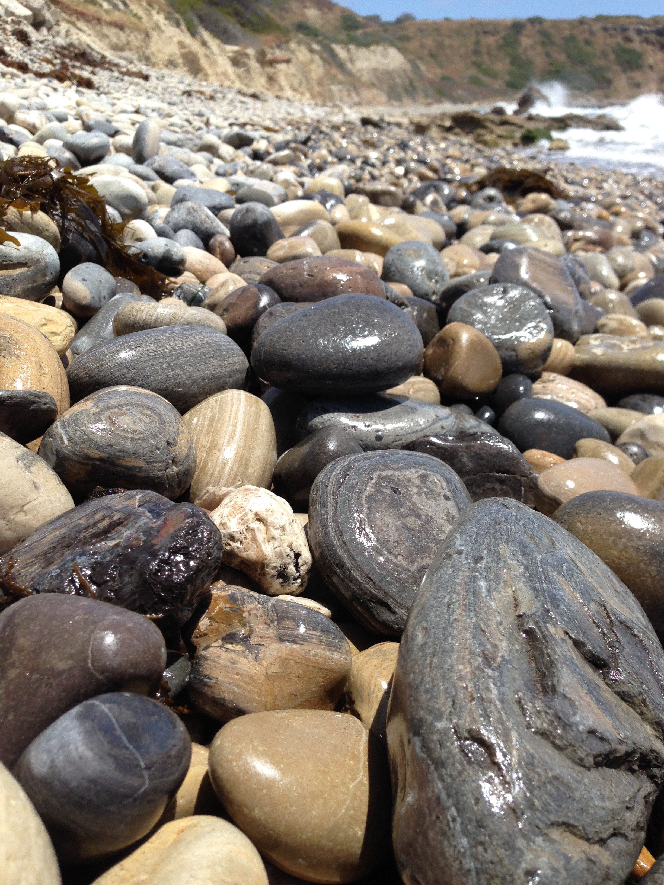

My Skills
I have adapted many skills during my life span. I have skills in soccer, volleyball, and track. I find myself very athletic and go good with these types of sports.
I am also good at technology due to the ATM program which you will read more about later. I work good in groups and feel that I can interact and help
people through hard situations. I manage to go above and beyond with my work I can achieve high grades in all of my accelerated classes.

My Family
I have four people in my family. My mother and father are divorced. I have two twin sisters that are 7 years old. I have two dogs:a pitbull and a poodle terrier.
I enjoy the company of my family even if we aren't all together any more.
My family is what keeps me going and I don’t know what I would do without them there by my side.
My family brings out the best side of me even in the hardest times and worst situations life throws at me.

My Interests
Photography is a big interest of mine as I discussed earlier it helps relieve
my stress and focus more on little things. My skills have grown over the years and it has slowly become a passion.
I would like to someday buy a nice camera to really take my pictures to the next level but am not there yet.
I also like investigations which is why I am considering becoming a investigator.
I like finding out the real truth and the people I can trust/rely on and can’t.

My Hobbies
My hobbies involve things such as exploring the outdoors.
I like photography which you will read more about later. I find that it relieves stress and helps me focus on the little things in life.
In my freetime I like to hike even if it is very hot outside. I also am involved in volleyball and it has recently grown on me. I just got accepted into a volleyball club called New Wave. I enjoy babysitting and interacting with little children.
I find that it helps me grow and mature and learn how to handle adult situations.
